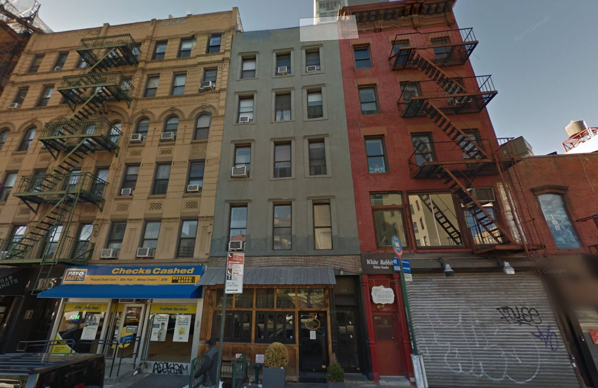
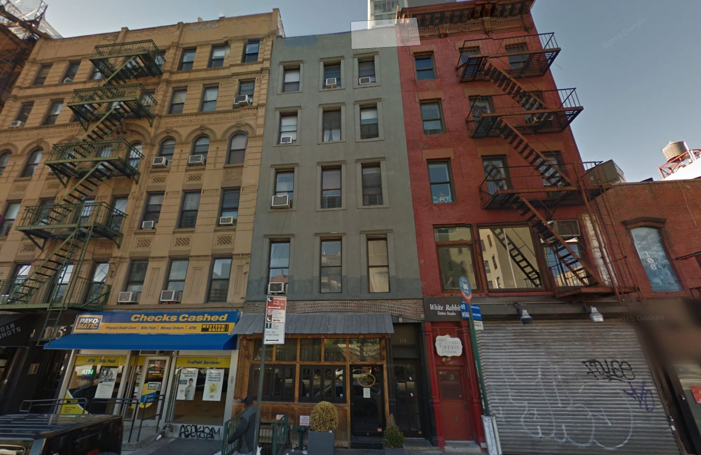
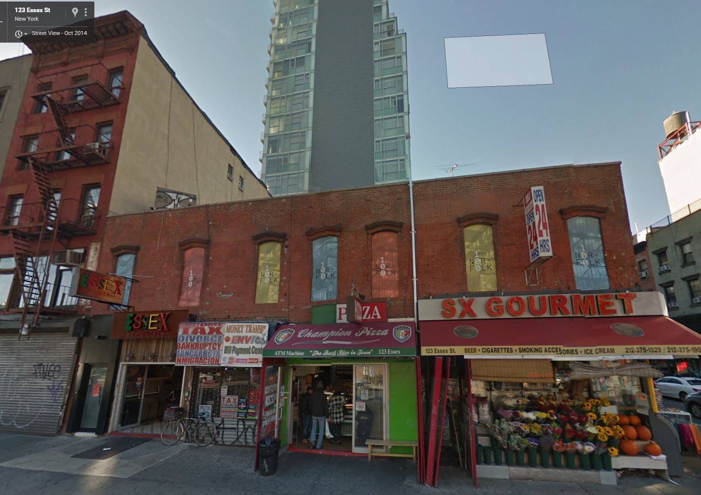
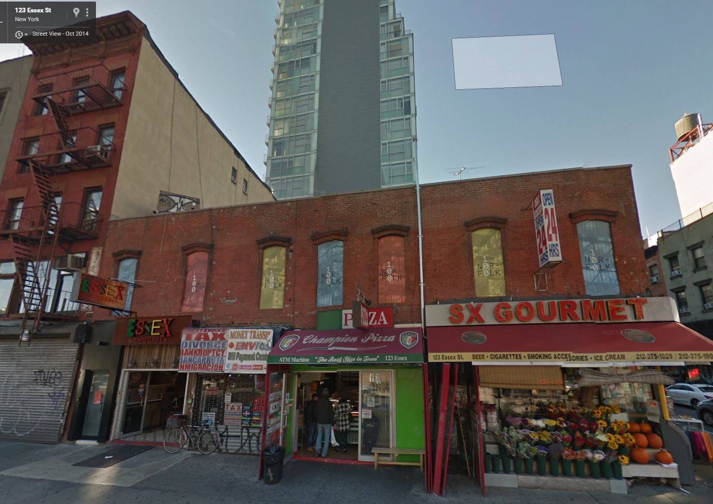

Manhattan
Sinae Lee
A block in Lower East Side, bounded by Ludlow Street, Rivington Street, Essex Street and Delancey Street
It is a fast-changing & lively block filled with trendy restaurants and bars along with old tenement, walk-up buldings
Themes and storytelling topic
Gentrification/neighborhood change
Images
Links
Block 410 CartoDB Map
Demographics
Mostly White (46%) & Asian (44%), relatively young, single & well-to-do people (median income $83,896) with high education attainment
Land-use summary
Mixed-used & commercial + parking garage
Sidebar/Fun Facts Section
Noise complaints
"Fights Outside Hotel on Rivington This Weekend Have Neighbors Worried About Safety (and Continued Noise)"
History
- Late 19th and early 20th: a massive immigration (German, Italians, Eastern European immigrants)
- After World War II: Became a radically integrated neighborhood with African Americans and Puerto Ricans
- 1960s: Experienced a period of ‘persistent poverty, crime, drugs, and abandoned housing’
- 1980s : Began to stabilize after the period of decline attracting students, immigrants from Bangladesh, China, the Dominican Republic, India, Japan and Poland
- Early 200s: Rapid gentrification
- 2013~: Essex Crossing redevelopment project undergoing
Sources
NYC Department of City Planning, US Census, Old NYC, HPD


 



 
